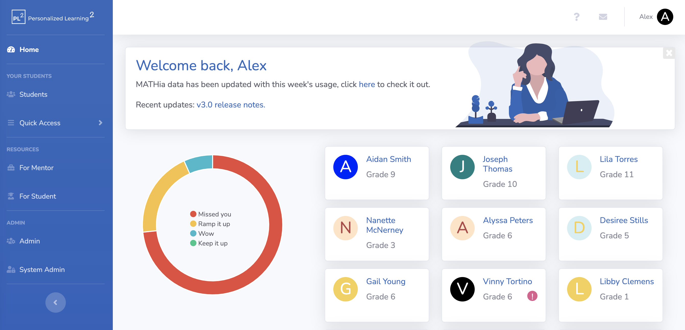
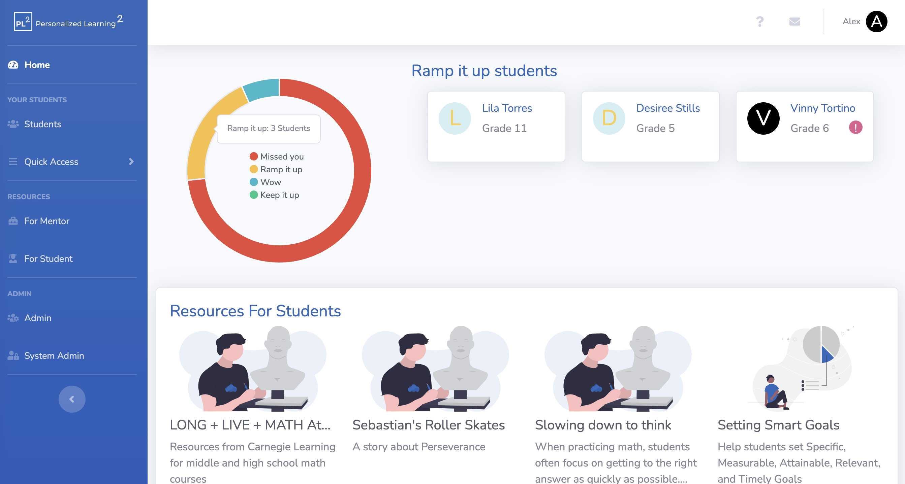
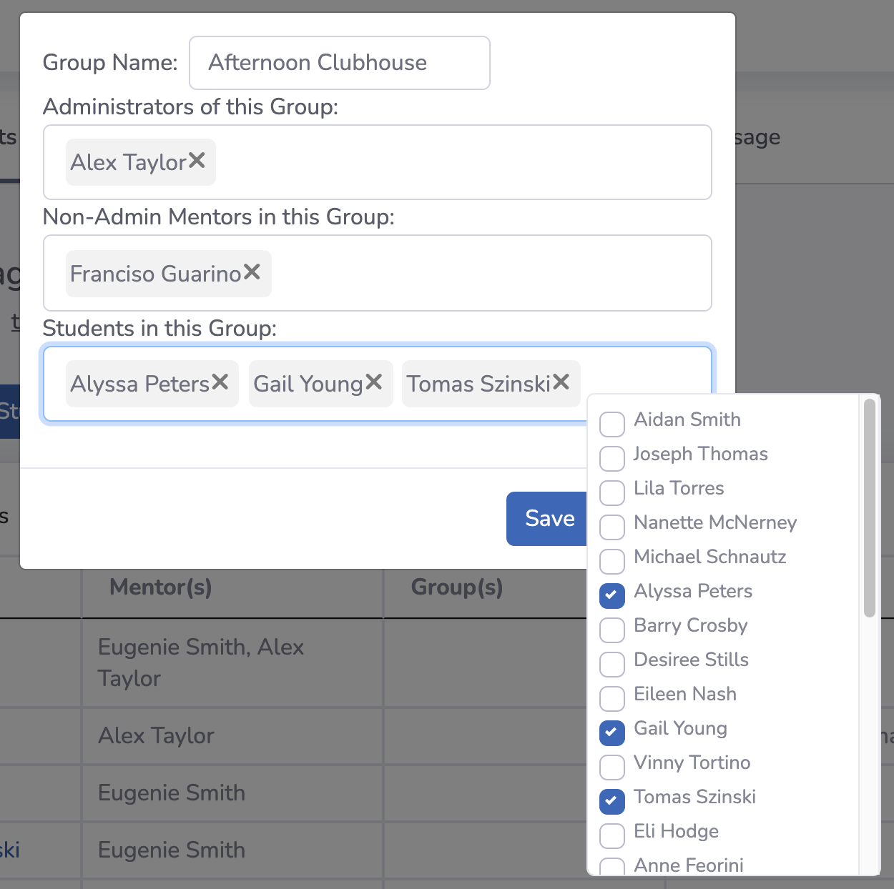
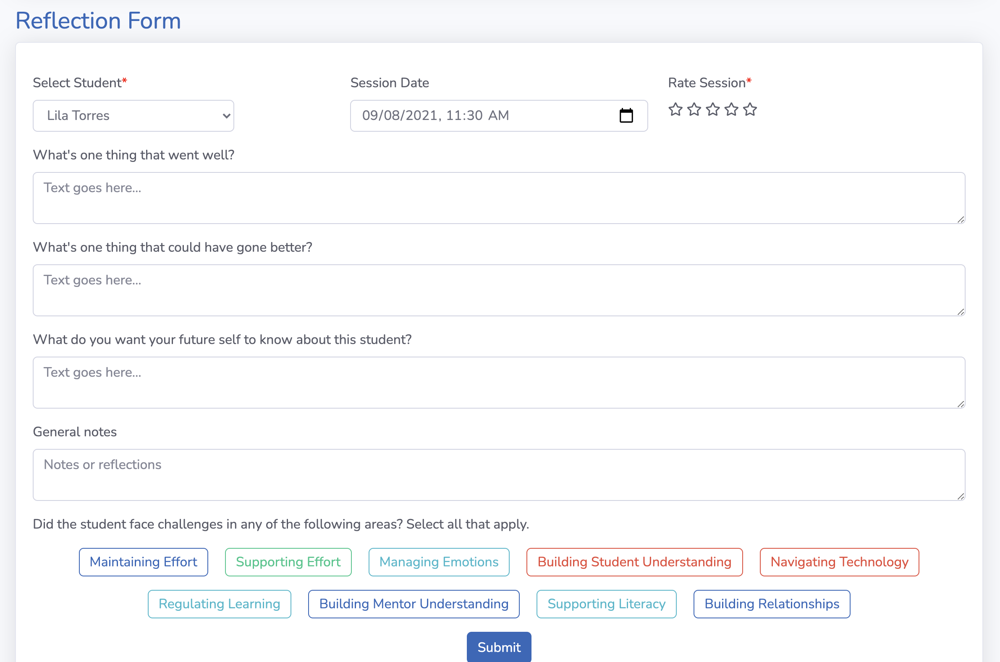
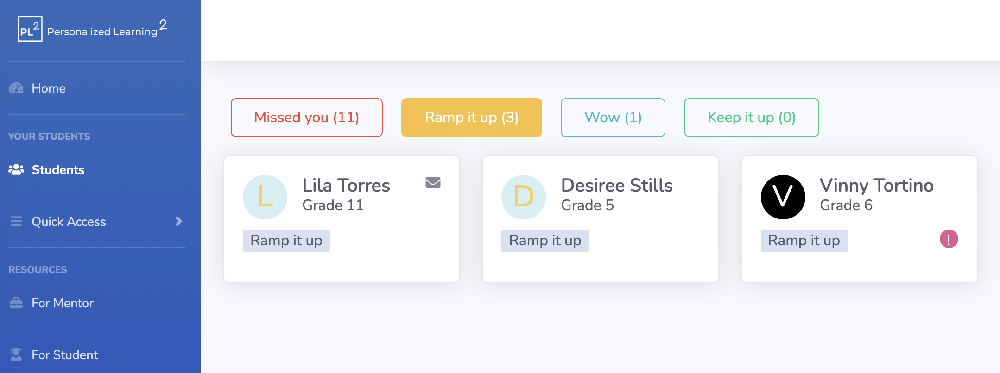
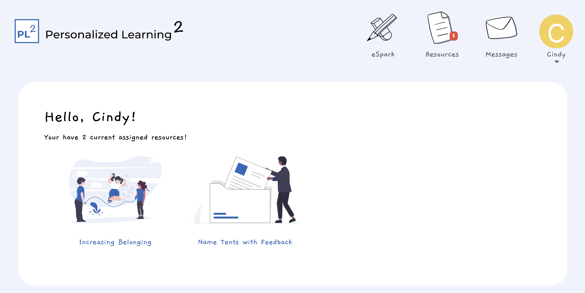
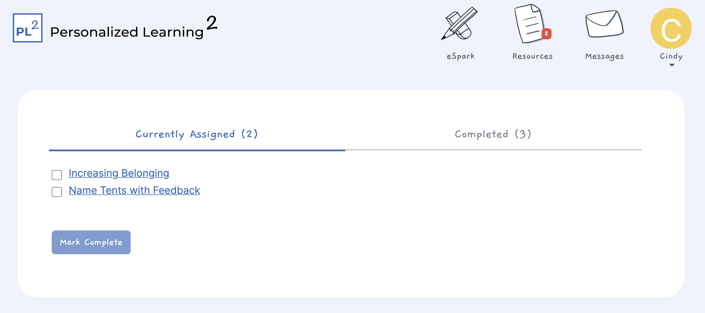

On September 1, 2021, we released our biggest update to the PL² application so far.
Some key highlights include a complete design overhaul, support for mobile phones and tablets, and a new student-facing version of the application. A complete list of updates can be found below. To see the new app in action, log in
here or click
here to see tutorial videos or visit the FAQs section.
New features:
- Complete design overhaul including support for mobile phone and tablet browsers. We recommend using the latest version of Google Chrome on all devices.
- New home page/dashboard view with recommended resources and quick status summary graphic.


- Help Center with FAQs, tutorials, and more.
- Messaging - you can now directly message your students.
- New Mentor Profile - you can now select focus areas for which you’d like to improve your skills.
- Quick Access Menu - for fast access to reflections and resource assistant.
- Profile pictures - mentors and students now have a default photo (their initial on a colorful background).
New Admin features:
- Groups - you can now divide your mentors and students into groups; these can be selected according to clubhouses, schools, classes, etc.

Updated features:
- Resources are now categorized according to those for mentors and those for students.
- Assigning resources - Mentors can now add instructions when assigning resources.
- Resources are more interactive: mentors can now answer and store their responses to resource prompts in the system.
- Updated Student Profile - mentors can select focus areas for their students.
- Updated Reflections - Added a star rating as a quantitative measure for each session and simplified reflection process.

- Updated resource assistant - now helps you find resources when you have a challenge or keyword in mind.
- Goals - mentors and admin can now reset goals to ed-tech defaults.
- Students page updated - now supports filtering by name, grade and status. Mentors can now un-assign resources.

- Updated create a resource form - added new support and redesigned form.
Features include:
- Students can log in to view assigned resources and instructions.

- Students can view resources and mark them complete.

- Students can send and receive messages from their mentors.
- Students can reach their edtech tool through the app.
- Student login works using google accounts.
If you have any questions or feedback for the team we can be reached
using the Help Center Feedback tab in the app or via email at
pl2-app-help@lists.andrew.cmu.edu. We would love to hear from you!